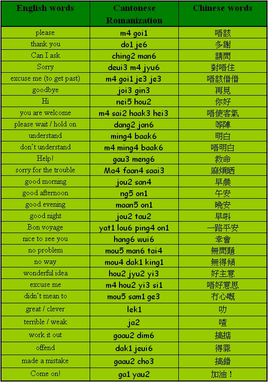

Unit 4 Manners
Unit 4 Manners 
Objectives
- To recognize and pronounce Cantonese words with the initials [m], [g], [j], [h], [ch];
- To recognize and pronounce Cantonese words with the finals [i], [au], [aau], [ing], [ou];
- To use simple Cantonese vocabulary and expressions in manners.
Warm up Work together.
- Can you briefly introduce yourself to the person sitting next to you?
Vocabulary

Sentence structure
Descriptive sentences (S Adj)
Hi.
你好。
[nei5 hou2.]
The shirt is very beautiful.
件衫好靚。
[gin6 saam1 hou2 leng3.]
I am hungry.
我肚餓。
[ngo5 tou5 ngo6.]
Conversation Practice with a partner.
Scene: Linda is asking Sally for help.
Linda: Hi, Sally.
你好，Sally。
[nei5 hou2, Sally.]
Sally: Nice to meet you, Linda.
幸會，Linda。
[hang6 wui6, Linda.]
Linda: I want to ask if you can lend me your Cantonese book?
請問你可唔可以借本廣州話書俾我呀？
[ching2 man6 nei5 ho2 m4 ho2 yi5 je3 bun2 gwong2 jau1 wa6 syu1 bei2 ngo5 a3?]
Sally: No problem.
無問題。
[mou4 man6 tai4.]
Linda: Sorry for being a nuisance. Thank you.
對唔住呀，麻煩晒，唔該你。
[deui3 m4 jyu6 a3, ma4 faan4 saai3, m4 goi1 nei5.]
Sally: You are welcome.
唔使客氣。
[m4 sai2 haak3 hei3.]
Quiz
1. What do you say if your friend is going for a trip?
2. What would you say if you do not understand what someone was saying?
3. If someone says thank you to you, how should you reply?